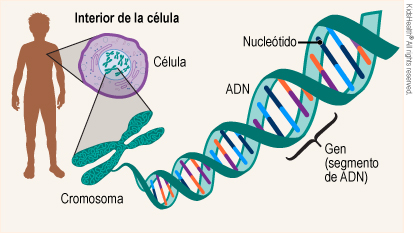
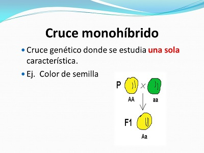
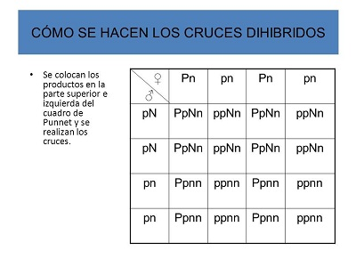

GENÉTICA.
¿Qué es la genética?
La genética es el estudio científico de los genes y la herencia ( cómo de ciertas cualidades o rasgos
se heredan de padres a hijos como resultado de cambios en la secuencia de ADN). Un gen es un segmento de ADN,
el cual contiene las instrucciones para elaborar una o más moléculas que ayudan a que funcione el cuerpo.
El ADN tiene forma de escalera torcida, como un sacacorchos, llamada doble hélice. Los dos rieles de la escalera
se llaman cadenas principales y los escalones son pares de cuatro componentes básicos (adenina, timina,
guanina y citocina), que se llaman bases. Las secuencias de estas bases dan las instrucciones para elaborar
moléculas, cuya mayoría son proteínas. Los investigadores calculan que los seres humanos tenemos aproximadamente
20,000 genes.

Todo el material genético de un organismo, incluso los genes y otros elementos que controlan su actividad,
constituye el genoma. El genoma completo de un organismo se encuentra en casi todas sus células. En las células
de los seres humanos, las plantas y los animales, el genoma está alojado en una estructura llamada núcleo.
El genoma humano es, en su mayor parte, el mismo en todas las personas, solo con unas pocas variaciones.
Para más información sobre el genoma humano, visite la página web sobre genómica del Instituto Nacional de
Investigación sobre el Genoma Humano.
¿Cómo se heredan los genes?
Nuestro ADN, incluso todos nuestros genes, está almacenado en los cromosomas, los cuales son estructuras que lo
envuelven firmemente para que quepa en el núcleo. Los seres humanos usualmente tenemos 23 pares de cromosomas en
las células. Los dos cromosomas de cada par contienen los mismos genes, pero pueden tener versiones diferentes de
estos, porque, en cada par, heredamos un cromosoma de nuestra madre y otro de nuestro padre. Las células
reproductoras (los óvulos y los espermatozoides) reciben un cromosoma al azar de cada grupo de 23 en lugar de
ambos a fin de que el óvulo fecundado contenga los 23 pares necesarios para el desarrollo típico.
¿Que es el cruce monohibrido?
Monohíbrido es un adjetivo que se utiliza para calificar a un tipo de cruzamiento o cruce. Un cruzamiento,
en tanto, implica la combinación de material genético de dos procedencias diferentes en un nuevo individuo.

¿Que es el cruce dihibrido ?
Un dihíbrido, en definitiva, surge a partir del cruce de razas diferenciadas por pares de caracteres
alelomorfos. Como los caracteres se segregan de forma independiente, pueden propiciar la aparición de
nuevas combinaciones.
